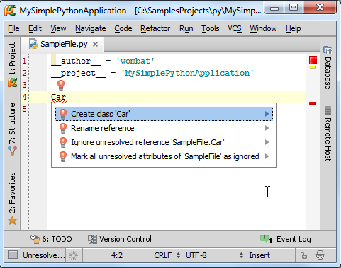
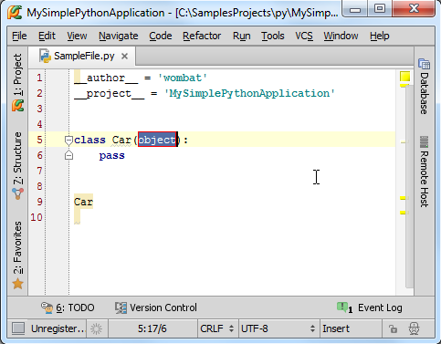
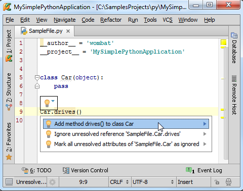
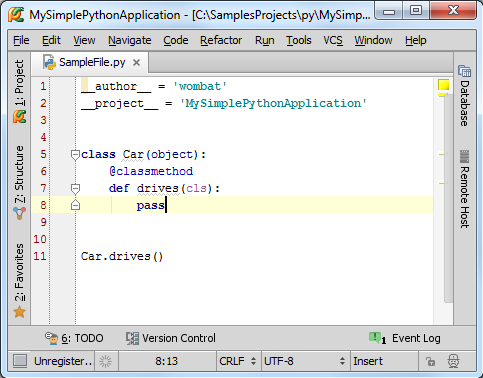
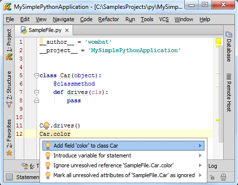
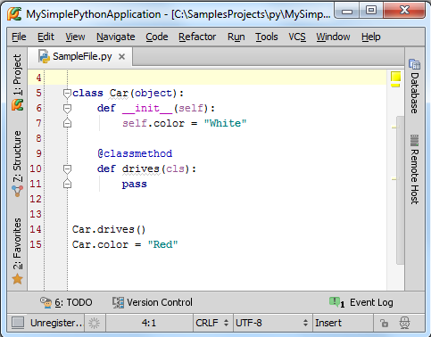
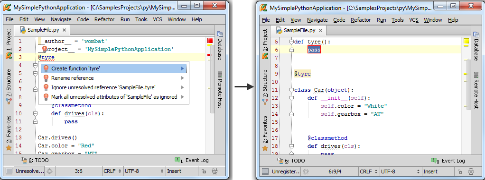

1、准备工作
（1）Pycharm版本为2.7或者更高。
（2）已经创建一个工程。
（3）创建Python文件（Alt+Insert→Python File）
2、生成源码
首先，我们实例化一个类，Pycharm会立即显示一个红色灯泡来给出快速补全的建议：

这里我们希望创建一个类，选择对应的提示命令，Pycharm会根据名称自动创建一个类：

接下来我们调用这个类的成员函数（一般情况下，一旦你在类名后面输入一个点号，Pycharm的代码补全机制就会列出当前可用的函数名称，然而在这里我们所用的成员函数还没有在类中进行创建）：

同样的情形，选择创建该方法，然后观察PyCharm如何生成成员函数：

接下来我们准备向类中添加一个成员变量"color"，Pycharm会提示我们创建一个成员变量：

OK，Pycharm智能的完成了变量的创建添加——创建了一个构造函数：

最后，也可以通过Pycharm智能创建一个全局函数：
